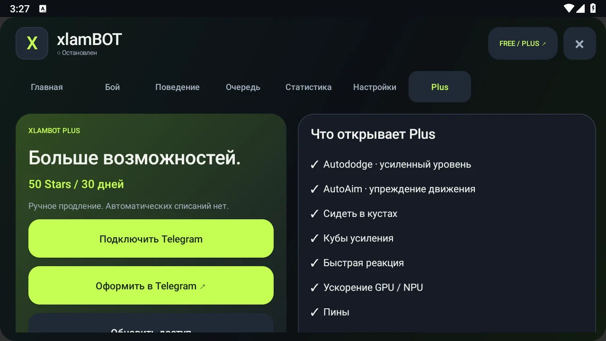

XLAMBOT / ANDROID
xlamBOT: plus: доступ и все функции
Plus добавляет отдельные переключаемые функции. Базовое движение, атаки, три стиля, обычная очередь и статистика остаются в Free.
Все главы руководства
Гас в BrawlerRules · 1.4.10
Дистанция, стрельба на отходе, щит себе и безопасные ящики и кубы. Дополнительные правила Шелли и Гаса включаются через BrawlerRules при активном Plus; при выключении используется обычная тактика. Подробности обновления →

В этой главе
Условия Plus 1.2
50 Telegram Stars на 30 дней. Продление вручную, автоматических списаний нет. Базовый APK и функции Free остаются бесплатными.
С выходом 1.2 новые пробные сроки и старая бета отменены. Оплаченные периоды, VIP и реферальные награды сохраняются. На старом клиенте ранее выданный офлайн-доступ может оставаться видимым до следующего обновления лицензии; это не новый пробный срок.
Связать телефон и оформить Plus
- Установи актуальный APK и открой вкладку Plus.
- Нажми «Подключить Telegram» и подтверди привязку именно своего устройства в @xlambottt_bot.
- Подпишись на @xlamModz и нажми проверку подписки, если бот просит это сделать.
- Открой Plus или мини-приложение, прочитай условия и оплати 50 Stars на 30 дней.
- В Android нажми «Обновить доступ». Затем включи нужные Plus-функции в каталоге.
Закрытие окна оплаты само по себе не подтверждает покупку. Статус меняется после подтверждения Telegram. Не повторяй оплату сразу, если статус задержался: сначала обнови его и проверь историю.
Мини-приложение и подписка на канал
Открой @xlambottt_bot и кнопку мини-приложения xlamBOT Plus. Здесь находятся срок доступа, связанный телефон, покупка и продление, история, помощь и личная реферальная ссылка.
Для Telegram-бота и мини-приложения требуется подписка на @xlamModz. Запуск Android от неё не зависит. Пробных сроков нет. Каждые пять новых подтверждённых друзей дают десять дней Plus; награда прибавляется к сроку и не отзывается при последующей отписке друга.
Autododge и AutoAim
Autododge: обычный уровень Free, усиленный Plus. Отключённый уровень выключает уклонение. Выбери режим общим регулятором в карточке функции.
AutoAim: прицеливание с учётом движения подтверждённого противника. Его можно включить или выключить. Функция не заменяет корректное изображение, выбор бойца и доступное управление; попадание каждого выстрела не гарантируется.
Быстрая реакция и аппаратное ускорение
Быстрая реакция обрабатывает уменьшенное изображение в бою. GPU и NNAPI дают альтернативные варианты распознавания; NPU зависит от Android-драйвера устройства.
Включай по одной функции и сравнивай реальные бои. После повторных сбоев возможен автоматический переход на CPU с записью в журнале. Отдельного обещания одинаковой скорости для всех телефонов нет.
Режим кустов удалён
Начиная с 1.4.5 режим ожидания в кустах удалён: он мог перекрывать боевые решения. Бот может проходить через кусты в обычной игре.
Кубы усиления и пины
«Кубы усиления»: бот может атаковать ящики с усилениями и подбирать выпавшие кубы. Отличай такую атаку от выстрела по противнику.
«Пины»: иногда отправляет эмоцию в спокойный момент. Бой и непосредственная опасность имеют приоритет; это не постоянная отправка пинов.
Пять друзей = десять дней Plus
- Открой реферальный раздел Telegram-бота или мини-приложения и скопируй личную ссылку.
- Друг должен быть новым пользователем: впервые зайти в бота именно по твоей ссылке и подтвердить подписку на @xlamModz.
- Каждые пять засчитанных друзей дают тебе десять дней Plus. Уведомления показывают прогресс, например «3 из 5».
Награда прибавляется к действующему сроку: оставалось 10 дней, достигнуты пять друзей — станет 20. Можно получать следующие награды за новые группы по пять. Приглашённый не получает отдельного пробного бонуса. Один пользователь засчитывается один раз, самоприглашение не подходит.
Смена после +N кубков теперь Free. Она перенесена в очередь и больше не является преимуществом Plus.
Другой телефон и поддержка оплаты
Plus связан с Telegram-аккаунтом и одним активным Android-устройством. Перед переносом прочитай подтверждение отвязки; один и тот же доступ не предназначен для одновременного запуска на нескольких телефонах.
История оплаты и обращение по платежу доступны в боте/мини-приложении. Для помощи укажи версию приложения, примерное время и идентификатор обращения. Не публикуй коды привязки и персональные платёжные сведения в общих комментариях.
Границы возможностей Plus
Этот релиз работает с видимым Brawl Stars. Фоновая игра за TikTok, заблокированный экран и несколько клонов игры не входят в Plus 1.2. Root и Shizuku для обычного запуска не нужны.
Сначала проверь Free на своём телефоне. Plus добавляет перечисленные функции; он не является обещанием совместимости с любой прошивкой, любого FPS или гарантированного роста кубков.
GitHub · Что нового · На главную
Проект поддерживает Olegu621 · Обновлено: